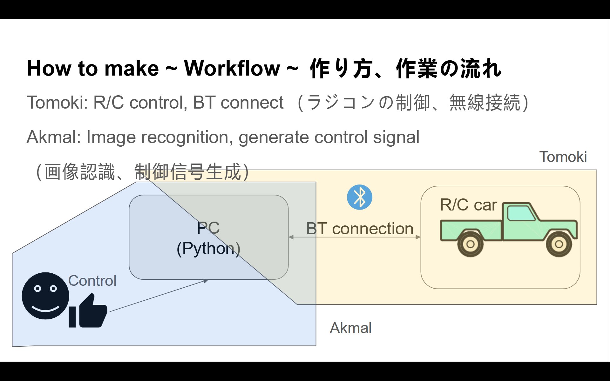
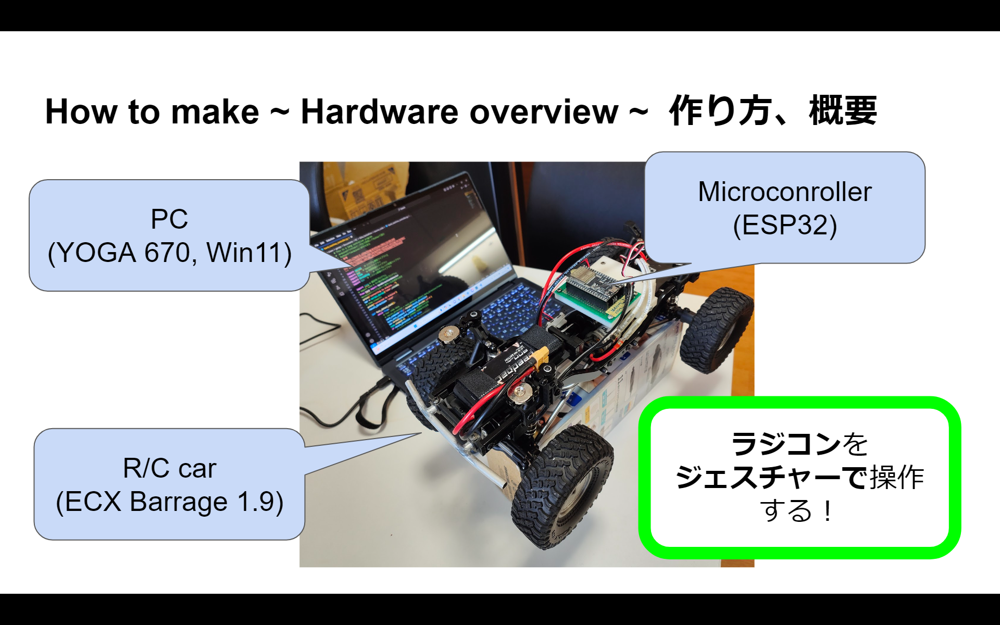

～ 目次 ～
- 1. イベント概要
- 2. アイデア出し
- 3. 決まった製品コンセプト
- 4. コンセプト決定の背景
- 5. 製作の流れ
- 6. 使用したもの
- 7. 構成
- 8. ソースコード
- 9. 動画
- 10. まとめ
- 11. 今後の予定
- 12. おまけ
- 13. 謝辞
- 14. 参考文献
1. イベント概要
2日間でプログラミングを用いてテーマに沿ったアプリ、IoTなどプロダクトを開発し、発表するイベントです（公式ページはこちら）。予選は2024/02/10-11、本選は2024/03/02-03に実施されます。本選に行くことはできませんでしたが、色々な人の面白いプロダクトと発表を見れてととても楽しかったです！
予選のテーマは「つながり」でした。
2. アイデア出し
インドネシア人留学生のAkmalと一緒にこのイベントに参加しました。母国語が私は日本語、Akmalはインドネシア語なのでどのように進めようか悩みました。2人とも英語が話せるので（私はカタコトですがｗ）英語で作業をすすめることにしました。テーマの「つながり」を「connection」と訳して、ブレスト形式で2人でアイデア出しを進めました。
3. 決まった製品コンセプト
非言語で操作可能な機械を開発することにしました。この装置で「人」と「人」、「ソフトウェア」と「ハードウェア」の「つながり」を実現します。
4. コンセプト決定の背景
私は留学生と暮らしていて、家電の使い方を説明することが多くありました。留学生の人も苦労していました。日本の家電は、操作ボタンが日本語で書かれているため、他の国の人は理解できません。ボタンのスペースには制約があるため、複数言語をプリントできないのは納得なのですが、何とかこの課題を解決したいと考えました。そこで、非言語で家電を操作したいと考えました。
非言語で操作できる機械ができれば、色々な国の「人」と「人」の協調作業を通して「つながり」を提供できると考えました。また、これを達成するためには「ソフトウェア」だけでなく「ハードウェア」のセットアップが必須であり、「ソフトウェア」と「ハードウェア」の「つながり」も実現が必要です。
そこで、非言語で機械を操作し「人」と「人」、「ソフトウェア」と「ハードウェア」のつながりを達成したいと考えました！
5. 製作の流れ
5.1. システム構成
考えたシステム構成はこちらになります。本当は家電を操作したかったのですが、改造する必要があったためやめました。（時間も限られていたので）
代わりに、ラジコンを操作することしました。このラジコンにはESP32を搭載しており、BluetoothやWi-Fiで操縦できるように独自に改造を施しています（回路図は後で説明します）
動作の流れは、
- PCからハンドジェスチャー（画像認識）に基づいて制御命令を生成
- 制御命令をPCからESP32マイコンに無線送信（Bluetooth）
- PCから受信した制御命令に基づいて、ラジコンカーを制御
という感じです。
5.2. 役割分担
作業時間が限られているので、それぞれの強みを活かして効率よく開発を進めます。分担は次のようにしました。
-
Tomoki：ハードウェアのセットアップ、無線通信（Bluetooth）、ラジコンの制御プログラム構築
-
Akmal：手のポーズ認識、制御命令の生成プログラムの作成
 ☝ Role allocation (役割分担)
6. 使用したもの
作業にあたって使用したソフトとハードウェア（装置）を整理しておきます。
6.1. ソフトウェア
- Arduino IDE（ESP32マイコン用のプログラム開発）
- Visual Studio Code (PC用プログラムの作成)
6.2. ハードウェア
-
ラジコンカー本体：ECX Barrage 1.9（1/12スケールロッククローラRC）←お気に入りです!
-
マイコンボード：ESP32-WROOM-32E ← PCと通信、ラジコンの制御命令生成
-
走行用バッテリー：Dynamite Speedpack (7.2V Ni-MH 700mAh) ←ESCに電源供給
-
クローラ用ESC：TEKIN BXR ←モータを回転
-
走行用モータ：Dynamite Tazer 370 Motor（DYNS1209）←ギアを回転させてタイヤを駆動
-
サーボモータ：Hitec DB777WP ←ステアを操作
-
フォトリフレクタ：LBR-127HLD ←センターシャフトの回転検出用（今回は使用していない）
 ☝ Hardware (ハードウェア)
7. 構成
7.1. ハードウェア
まずラジコンの構造は下の図のようになってます。このレシーバ部分を自作のもの（“Happy RC Driver”）に置き換えました。
レシーバの回路図（結線図）は下の画像のようになっています。
回路の動作原理としては、マイコンが制御信号（PWM）を生成して、ラジコンのサーボモータと走行用モータを制御する仕組みになっています。
サーボモータや走行用モータ用の電源はマイコンから直接取るのではなく、走行用の 7.2 [V]バッテリーから取るよう工夫しています。（マイコンだけでは電源不足になるため）
7.2. ソフトウェア
7.2.1. プログラムの概要、動作フロー
PC側のプログラムは A.ポーズ検出用プログラム、B.制御命令送信用プログラムの2つで構成されています。実際にはプログラムAをプログラムBにインポートすることで、動作を実現しています。
マイコン側のプログラムは、受信した制御命令に応じてサーボモータとESCを制御するようにしています。制御用のPWM信号は ESP32Servoライブラリを使って生成しています。
また、PCとマイコン間はBluetooth通信で接続しています。通信には、PC側のPython側プログラムにpyserialモジュール、レシーバ側のC++（Arduinoの）プログラムにはBluetoothSerialライブラリを使っています。
動作を流れを整理すると、下の図のようになります。
8. ソースコード
本番に使ったソースコード（GitHubにもあります）をそのまま載せます。急いで作ったので整理されてませんがお許しください…
このプログラムを実際に使うときは、「\♯」を"#“に置き換えて使ってください（Markdownで「#」をエスケープしたかったのですができませんでした）
PC側のPythonプログラムでハンドジェスチャーを認識するために、CVZone というパッケージを使ってます。
さらに、ハンドジェスチャー認識のプログラムと、マイコンからの信号を受信する（今回は使いませんでしたが、センサの電圧だけ読み取るようにしてます）処理を同時に行うため、マルチスレッドで並行処理しています。
8.1. PC側プログラムA
import cv2
from cvzone.HandTrackingModule import HandDetector
class HandDirectionDetector:
def __init__(self):
self.detector = HandDetector(detectionCon=0.8, maxHands=1)
def determine_direction(self, finger_count):
if finger_count == 1:
return 'forward'
elif finger_count == 2:
return 'backward'
elif finger_count == 3:
return 'right_and_backward'
elif finger_count == 4:
return 'left_and_backward'
elif finger_count == 5:
return 'right_and_forward'
elif finger_count == 0:
return 'left_and_forward'
else:
return 'stop'
def detect_hand_direction(self, frame):
hands, img = self.detector.findHands(frame)
if hands:
lmList = hands[0]
finger_count = self.detector.fingersUp(lmList)
cv2.putText(frame, f'Finger count: {sum(finger_count)}', (10, 30), cv2.FONT_HERSHEY_COMPLEX, 1, (255, 255, 255), 1,
cv2.LINE_AA)
direction = self.determine_direction(sum(finger_count))
cv2.putText(frame, f'Direction: {direction}', (10, 60), cv2.FONT_HERSHEY_COMPLEX, 1, (0, 255, 0), 2,
cv2.LINE_AA)
return direction
return None8.2. PC側プログラムB
\# This is a lang controlled program.
\# ArduinoからのCdsセンサ出力受信してPythonで読む
\# PythonからArduinoに命令を送る
''' 参考
[1] https://next-k.site/blog/archives/2021/12/09/645
[2] https://codechacha.com/ja/python-convert-string-to-bytes/
[3] https://qiita.com/umi_mori/items/757834e0ef75f38cea19
'''
import serial # シリアル通信ライブラリ]
import cv2 # OpenCVライブラリ
import time # 時間関連のライブラリ
import threading # マルチスレッド処理ライブラリ
import sys # システム関連のライブラリ
import lang # 翻訳用プログラム
\# import hand # 手の動き検出用プログラム
from hand import HandDirectionDetector
#Arduinoのシリアルポート番号と伝送速度を設定
print("connecting to Arduino...")
ser = serial.Serial("COM6",115200)
\# time.sleep(5)
print("connected to Arduino")
result_direction= "stop"
def func_detect_hand():
while True:
# Your code here
# result_direction = hand_detector.detect_hand_direction(frame)
sent_command="{0};".format(result_direction)
byte_sent_command = sent_command.encode('utf-8')
ser.write(byte_sent_command) #制御命令を送信
time.sleep(0.5) # 1秒間隔で制御命令を送信
if result_direction is not None:
# print(f'Speed: {result_direction}')
# ser.write(byte_sent_command) #制御命令を送信
print("byte_sent_command")
# time.sleep(1) # 1秒間隔で制御命令を送信
\# def func_control():
\# while True: # キーボード入力によって、Arduinoに制御命令を送信
\# # if(contorol_command=="q"): # qを入力するとプログラムを終了
\# # ser.close()
\# # sys.exit(0)
\# ser.write(result_direction) #制御命令を送信
\# time.sleep(1) # 1秒間隔で制御命令を送信
def func_read():
while True:
time.sleep(0.1) # 10[ms]間隔で計測データを読み取り
print("read")
val_arduino=ser.readline()
val_decoded=val_arduino.strip().decode("UTF-8")
print(val_decoded) #val_arduino:byte型なのでb'文字列'となって出てくる
if __name__=="__main__":
thread_1=threading.Thread(target=func_detect_hand)
thread_2=threading.Thread(target=func_read)
# thread_3=threading.Thread(target=func_control)
thread_1.start()
thread_2.start()
# thread_3=start()
# Inisialisasi objek HandDirectionDetector
\# hand_detector = HandDirectionDetector()
hand_detector = HandDirectionDetector()
\# Inisialisasi tangkapan video
video = cv2.VideoCapture(0)
# Loop utama
while True:
# Membaca frame dari video
ret, frame = video.read()
frame = cv2.flip(frame, 1)
# Mendapatkan arah dari objek HandDirectionDetector
result_direction = hand_detector.detect_hand_direction(frame)
# Print hasil di terminal
if result_direction is not None:
# print(f'Speed: {result_direction}')
pass
# Menampilkan frame
cv2.imshow("frame", frame)
# Cek jika tombol 'k' ditekan untuk keluar dari loop
k = cv2.waitKey(1)
if k == ord("k"):
break
# Melepas tangkapan video dan menutup jendela OpenCV
video.release()
cv2.destroyAllWindows
# ser.close()8.3. レシーバ(ESP32マイコン)側プログラム
/*Arduinoからデータを送ってPythonで読む*/
/*参考文献*/
//[1]:https://tomson784.github.io/memo/python/arduino/2021/05/25/pyserial-arduino.html
//[2]:https://tanudon.work/499/
//[3]:https://spiceman.jp/arduino-cds-program/
/*ライブラリ*/
#include "BluetoothSerial.h" //ESP32のBluetooth通信に使用
#define PI 3.141592653589793 //円周率
/*Bluetooth通信に必要*/
BluetoothSerial ESP_BT; //ESP_BTという名前でオブジェクトを定義
/*ハードウェアの接続ピンの設定*/
#define SERVO_PWM_PIN 4 //サーボモータのPWMピン（信号入力ピン）をESP32の4番ピンに接続 ★回路と対応した番号にする
#define ESC_PWM_PIN 16 //ESCのPWMピン（信号入力ピン）をESP32の16番ピンに接続 ★回路と対応した番号にする
/*ライブラリ*/
#include <ESP32Servo.h> //ESC・サーボモータの制御に使用
#include <BLEDevice.h> //Bluetooth通信用
#include <BLEServer.h> //Bluetooth通信用
#include <BLEUtils.h> //Bluetooth通信用
#include <BLE2902.h> //Bluetooth通信用
BLECharacteristic *pCharacteristic; //Characteristicを定義
bool deviceConnected = false; //接続状態を保存する変数
/*ESC,サーボのオブジェクト作成*/
Servo myservo; // サーボモータを制御するためのServoオブジェクト作成
Servo myesc; // ESCを制御するためのServoオブジェクト作成
int pulsew_min = 500; //minimum pulse width of servo motor（サーボモータの最小パルス幅）
int pulsew_max = 2400; //maximum pulse width of servo motor（サーボモータの最大パルス幅）
/*ステアリングの設定*/
unsigned long mov_speed_ST = 40; //ステア移動速度
int center_pos = 95; //ステア中心位置 [サーボモータの中心位置 (90°)] ★まっすぐ走るように調整。90より大きい値にするとステア（ハンドル）が右寄りに、90より小さい値にするとステア（ハンドル）が左寄りになる
int left_DR = 20; //左の切れ角 ★:好みに合わせて調整。ただし大きくしすぎないように注意。
int right_DR = 25; //右の切れ角 ★:好みに合わせて調整。ただし大きくしすぎないように注意。
int left_max = center_pos - left_DR; //左ステアの最大位置 [中心位置より反時計回りに20°（left_DR）回転した位置] ★逆に動くときはleft_DRの手前の符号をプラス（+）に
int right_max = center_pos + right_DR; //右ステアの最大位置 [中心位置より時計回りに25°（right_DR）回転した位置] ★逆に動くときはright_DRの手前の符号をマイナス（-）に
/*スロットルの設定*/
unsigned long mov_speed_TH = 0; //スロットル移動速度
unsigned long mov_speed_brk = 40; //ブレーキ速度
int neutral_pos = 93; //中立位置 [スロットルの中立位置 (90) ★ESCの設定によってずれがあるので、前後に走行しないよう値を調整する。※ ESC側を90で中立になるよう設定（上級者向け。ESCの説明書通りプロポでニュートラル設定を済ませてから、このプログラムの値を調整するのがオススメ）してもよい。]
int forward_DR = 10; //前進の速さ ★好みの速度に調整
int backward_DR = 10; //バックの速さ ★好みの速度に調整
int forward_max = neutral_pos + forward_DR; //前進の最大位置 ★逆に動くときはforward_DRの手前の符号をマイナス（-）に
int backward_max = neutral_pos - backward_DR; //バックの最大位置 ★逆に動くときはbackward_DRの手前の符号をプラス（+）に
int turbo_speed = 120; //全開走行時の速度（180が最大。速すぎると思ったら170や160など値を小さくしてみる）
/*値設定の注意点*/
//速度(mov_speed_ST,mov_speed_TH)は 0-50 の範囲で与える。（0：最低速度、50:最大速度）
//スロットル、サーボモータの値(pos)の範囲は、 0≦ pos ≦180 で与える。
//myservo.write 関数には回転角を絶対的な位置で与える。例) 90°から 45°反時計回りに動いてほしいときは、-45ではなく、45を関数に入力する。
/*ステアとスロットルの位置を記憶する変数*/
int CH1 = center_pos; //CH1:ステア
int CH2 = neutral_pos; //CH2:スロットル
/*プログラムの流れを制御する変数*/
char input = 'C'; //入力信号
unsigned long curr; /*現在時刻を保存*/
unsigned long prev_ST = 0; /*前時刻を保存*/
unsigned long prev_TH = 0; /*前時刻を保存*/
int val=0; //センサ入力値
float voltage=0; //電圧に変換したセンサ入力値
unsigned long prevReadTime_ControlSignal = millis(); // 制御命令の読み取り処理を始めた時間
long readPeriod_ControlSignal = 50; // 制御命令の読み取り周期 [ms]
unsigned long prevReadTime_Sensor1 = millis(); // センサ値の読み取り処理を始めた時間
long samplingRate_Sensor1 = 150; // センサの読み取り周期 [ms]
String received_data_byte;
String received_data = "1500";
/*PWM制御でサーボモータの角度を制御する関数*/
/*ステアを操作する関数*/
void change_ST_pos(int goal_pos, unsigned long mov_speed) {
unsigned long delay_time = 50 - mov_speed; //処理を遅くする時間（この値が大きいとゆっくりな操作に）
if ((curr - prev_ST) >= delay_time) {
/*ステアを切る処理*/
//右折
if (goal_pos - CH1 > 0) {
CH1++;
myservo.write(CH1);
//左折
} else if (goal_pos - CH1 < 0) {
CH1--;
myservo.write(CH1);
//その他→ステアはそのまま
} else {
myservo.write(CH1);
}
prev_ST = curr; //前回に処理を実行した時刻を現在時刻に更新
}
}
/*スロットルを操作する関数*/
void change_TH_pos(int goal_pos, unsigned long mov_speed) {
unsigned long delay_time = 50 - mov_speed; //処理を遅くする時間（この値が大きいとゆっくりな操作に）
if ((curr - prev_TH) >= delay_time) {
/*スロットルを操作する処理*/
//前進
if (goal_pos - CH2 > 0) {
CH2++;
myesc.write(CH2);
//後退
} else if (goal_pos - CH2 < 0) {
CH2--;
myesc.write(CH2);
//その他→スロットルはそのまま
} else {
myesc.write(CH2);
}
prev_TH = curr; //前回に処理を実行した時刻を現在時刻に更新
}
}
void setup() {
Serial.begin(115200); //伝送速度設定
ESP_BT.begin("ESP32_RC_Receiver"); //接続画面で表示される名前を設定 ★好きな名前にしてよい
myservo.attach(SERVO_PWM_PIN, pulsew_min, pulsew_max); //サーボモータのPWM端子とArduinoの4番ピンを接続 ★回路と対応した番号にする
myesc.attach(ESC_PWM_PIN, pulsew_min, pulsew_max); //ESCのPWM端子とArduinoの16番ピンを接続 ★回路と対応した番号にする
Serial.println("Initializing ST and TH position....");
myservo.write(center_pos); // ステアを中心(Center)に
myesc.write(neutral_pos); //中立(Neutral)
delay(2000);
}
void loop() {
unsigned long currentTime = millis(); // 現在時刻を取得
// lcd.setCursor(0,0);
/* 1:Receive data from PC */
if(currentTime-prevReadTime_ControlSignal>readPeriod_ControlSignal){
prevReadTime_ControlSignal=currentTime; // 前時刻を現在の時刻に更新
if(ESP_BT.available()>0){
received_data_byte=ESP_BT.readStringUntil(';'); // read data from PC
ESP_BT.println("received_data="+received_data_byte);
}
}
/* 2:Send data to PC */
if(currentTime-prevReadTime_Sensor1>samplingRate_Sensor1){
prevReadTime_Sensor1=currentTime; // 前時刻を現在の時刻に更新
val=analogRead(25); //センサの値などを読む
voltage=float(val)*(3.3)/(4096); // AD変換
ESP_BT.println((String)"V="+voltage+" [V]"); //文字をシリアルモニタに表示
}
curr = millis(); //現在時刻を取得
/*命令に基づいてラジコンを制御*/
if (received_data_byte == "forward") {
change_ST_pos(center_pos, mov_speed_ST); // ステアを中心(Center)に
change_TH_pos(forward_max, mov_speed_TH); //前進(Forward)
} else if (received_data_byte == "backward") {
change_ST_pos(center_pos, mov_speed_ST); // ステアを中心(Center)に
change_TH_pos(backward_max, mov_speed_TH); //後退(Backward)
} else if (received_data_byte == "stop") {
forward_max = neutral_pos + forward_DR; //標準の速度に設定
change_ST_pos(center_pos, mov_speed_ST); // ステアを中心(Center)に
change_TH_pos(neutral_pos, mov_speed_brk); //中立(Neutral)
} else if (received_data_byte == "left") {
change_ST_pos(left_max, mov_speed_ST); // ステアを左(Left)に切る
change_TH_pos(neutral_pos, mov_speed_brk); //中立(Neutral)
} else if (received_data_byte == "right") {
change_ST_pos(right_max, mov_speed_ST); // ステアを右(Right)に切る
change_TH_pos(neutral_pos, mov_speed_brk); //中立(Neutral)
} else if (received_data_byte == "left_and_forward") {
change_ST_pos(left_max, mov_speed_ST); // ステアを左(Left)に切る
change_TH_pos(forward_max, mov_speed_TH); //前進(Forward)
} else if (received_data_byte == "right_and_forward") {
change_ST_pos(right_max, mov_speed_ST); // ステアを右(Right)に切る
change_TH_pos(forward_max, mov_speed_TH); //前進(Forward)
} else if (received_data_byte == "left_and_backward") {
change_ST_pos(left_max, mov_speed_ST); // ステアを左(Left)に切る
change_TH_pos(backward_max, mov_speed_TH); //後退(Backward)
} else if (received_data_byte == "right_and_backward") {
change_ST_pos(right_max, mov_speed_ST); // ステアを右(Right)に切る
change_TH_pos(backward_max, mov_speed_TH); //後退(Backward)
} else if (received_data_byte == "accelerate") {
forward_max = turbo_speed; //ターボの速度に設定
change_TH_pos(forward_max, mov_speed_TH); //前進(Forward)
} else if (received_data_byte == "deaccelerate") {
forward_max = neutral_pos + forward_DR; //標準の速度に設定
change_TH_pos(forward_max, mov_speed_TH); //前進(Forward)
} else {
change_ST_pos(center_pos, 50); // ステアを中心(Center)に
change_TH_pos(neutral_pos, 50); //中立(Neutral)
}
}9. 動画
手のポーズに応じてラジコンを操作します。操作は難しいですが楽しいです！笑
10. まとめ
今回は、手で操作可能な装置を開発しました。この装置の開発を通して、国を超えた「人」と「人」、「ソフトウェア」と「ハードウェア」の「つながり」を実現しました。
11. 今後の予定
今回はラジコンの走行する向きを制御するまでしかできなかったので、速度を調整できるようにアップデートしたいと考えています。また、ジェスチャーを指の方向にするなど分かりやすくなるように工夫したいです。
そして、今回は制御対象がラジコンだったので家電などの他の製品に応用したいです。
12. おまけ
実は手で操作するプログラムの前に、キーボードの文字入力で操作するプログラムを作りました（GitHubにある lang_machine_controller.py というプログラム）。アイデア出しをした直後は、音声認識で操作したくて音声認識プログラムを作っていたのですが、途中でハンドジェスチャーに切り替えました。このプログラムは音声認識ではありませんが、キーボードで文字を入力（日本語で"migi"と入力すると右に、インドネシア語で"kanan"と入力してもラジコンが右に動きます笑）。Google翻訳のモジュールをPythonにインポートして、このプログラムを組みました。
13. 謝辞
ハッカソンという貴重な機会を提供してくださった Qiita株式会社様、協賛企業の皆様、イベントを一緒に盛り上げてくださった参加の皆様に感謝申し上げます。そして、楽しみながら一緒に開発を進めてくれた Akmal Fauzi 氏に心から感謝致します。
14. 参考文献
- Qiita @umi_mori「シリアル通信入門【Python】」、(https://qiita.com/umi_mori/items/757834e0ef75f38cea19)
- tomson784「pythonでArduinoとPC間でシリアル通信する」、(https://tomson784.github.io/memo/python/arduino/2021/05/25/pyserial-arduino.html)
- Tanudon Room「Python §05： pyserialでシリアル通信する方法を解説【初心者向け】」、(https://tanudon.work/499/)
- ITエンジニアのメモ帳「【python】同時に2つ以上の処理を実行する方法(threading)」、(https://next-k.site/blog/archives/2021/12/09/645)
- codechacha.com「Python - Stringをbytesに変換する方法」、(https://codechacha.com/ja/python-convert-string-to-bytes/)
- GitHub @murtazahassan 「cvzone」、(https://github.com/cvzone/cvzone)